Trải nghiệm Call Of Duty: Warzone tựa game Sinh Tồn nên thử vì mọi thứ gần như hoàn hảo mà game lại miễn phí
Ra mắt cách đây không lâu, nhưng tựa game trên PC/Laptop Call of Duty: Warzone đang nhanh chóng nhận được sự chú ý của cộng đồng game thủ. Cốt truyện ổn, nhân vật quen thuộc, gameplay hấp dẫn và đồ họa đỉnh cao chỉ là một trong số những yếu tố làm cho game nhận được sự quan tâm tới vậy, mà việc được chơi miễn phí mới là điều khiến cho game thủ nháo nhào tải ngay về để trải nghiệm. Mình có ẩn giấu một gợi ý đắt-giá-như-vàng cho những bạn kiên nhẫn đọc đến cuối bài đấy nhé.
1. Call of Duty: Warzone là gì?
Call of Duty: Warzone là tựa game sinh tử Battle Royale (thể loại game sinh tồn) được làm dựa trên Call Of Duty: Modern Warfare. Activision (nhà phát hành game) đã đem một làn gió mới cho thể loại game sinh tồn này, với những đầu tư từ chất lượng đồ họa cho đến gameplay.
Với một game thủ đã quen mặt với chuỗi Series game Call of Duty, thì Warzone có thể là món khai vị đáng để thử trước khi chúng ta được trải nghiệm Call Of Duty: Modern Warfare 2 trong thời gian tới.
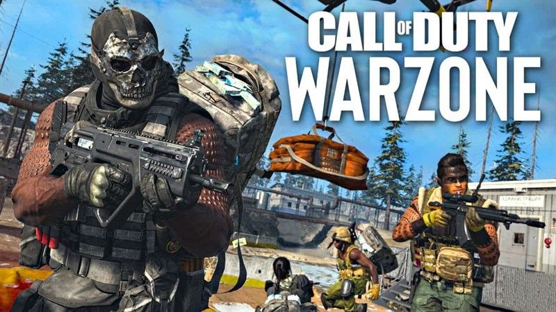Warzone là làn gió mới trong thể loại game Battle Royale.
Nói sơ qua một chút về những tựa game Battle Royale, đây là loại game chiến đấu sinh tử, tất cả người chơi sẽ được nhảy dù vào một khu vực, và nhiệm vụ của họ là sẽ phải tìm những trang bị cần thiết có thể tiêu diệt những người chơi khác để trở thành người sống sót cuối cùng.
Sự tăng mạnh về lượng người chơi của trò chơi sinh tử chính là động lực cho nhiều ông lớn của làng game tập trung bắt đầu phát triển thể loại này.
Dĩ nhiên tựa game FPS đình đám Call Of Duty đã không khoanh tay đứng nhìn các đối thủ của mình chạy trước, Activision đã tung ra chế độ chơi Warzone nằm trong hệ thống game Modern Warfare nhằm cạnh tranh cũng như duy trì cộng đồng gamer của mình.
Mới đây, game đã chính thức bước sang mùa 3, trong bản cập nhật mới nhất nặng 12 GB mà nhà phát hành đem đến cho người chơi, cuối cùng cũng đã có chế độ Squad (đồng đội) 4 người. Bạn sẽ không còn phải cô đơn chống chọi với 149 người chơi khác, mà giờ đây sẽ có những người đồng đội siêu tạ sát cánh kề bên.
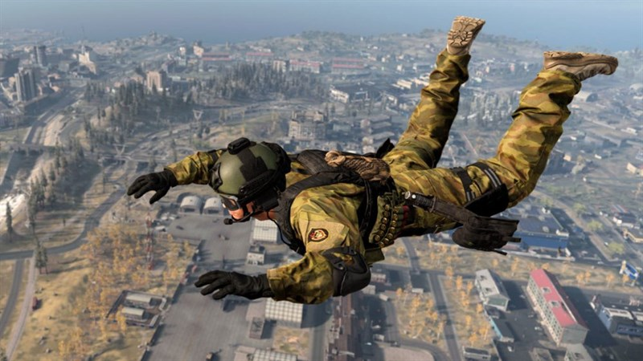Call Of Duty: Warzone chính là món khai vị trước khi Modern Warfare 2 được ra mắt trong thời gian sắp tới.
2. Ấn tượng bởi đồ họa đẹp tới từng chi tiết
Ngay từ những trải nghiệm đầu tiên Call Of Duty: Warzone, bạn sẽ cảm giác sự chăm chút của Activision dành cho game. Từ những chi tiết nhỏ như lá cây, đất cát xung quanh đều đem đến cho người chơi nhưng cảm giác chân thực nhất. Đây có thể coi là điểm cộng cực lớn của Warzone.
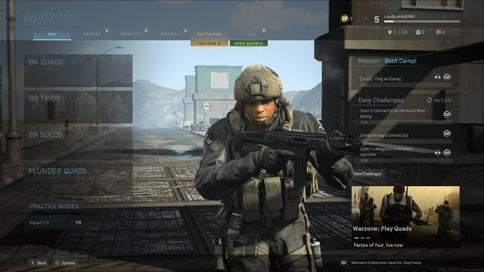Ngay từ phòng chờ ở vào trận, đã có thấy sự chăm chút về mặt đồ họa của game.
Nếu đặt lên bàn cân so với các tựa game cùng thể loại như Pubg, Apex Legend hay Fornite, đồ họa của Warzone đem lại những chi tiết chân thực và mãn nhãn hơn hẳn. Tạo hình và chuyển động mượt mà của nhân vật sẽ làm cho bạn có cảm giác rất chân thật, từ vết nhăn trên áo, cho tới những biểu cảm, chuyển động nhỏ của từng nhân vật và ngoại cảnh xung quanh đều được làm rất tỉ mỉ, có thể hiểu lý do tại sao dung lượng game lại lên đến hơn 80 GB.
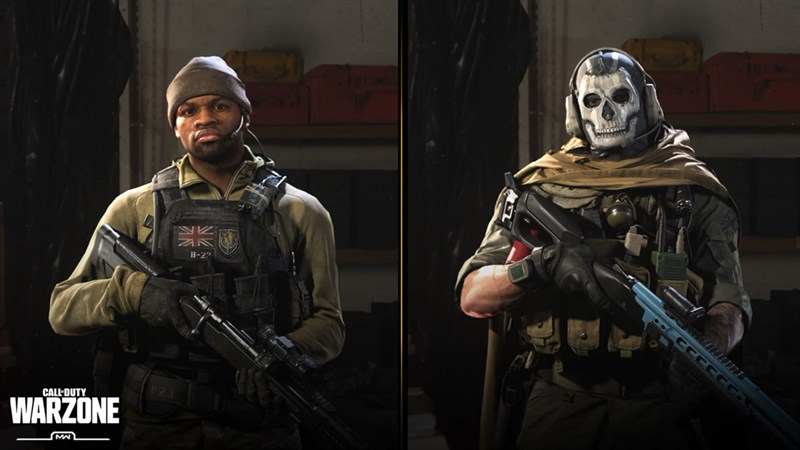Tạo hình nhân vật cực kì cool ngầu và ấn tượng của Warzone, đặc biệt là nhân vật Ghost (bên phải) đã trở thành huyền thoại cho chuỗi game C.O.D.
3. Hãy thử chế độ cướp tiền (Plunder Quads) nếu bạn lần đầu bạn lần đầu đến với game
Plunder là một thể loại chơi khác trong Warzone, các đội chơi sẽ phải chạy đi thu thập tiền mặt để bỏ vào ngân hàng. Nhiệm vụ chính trong chế độ này là đạt được 1 triệu $ nhanh nhất có thể, đội có số tiền nhiều nhất trong ngân hàng khi hết thời gian sẽ là người chiến thắng.
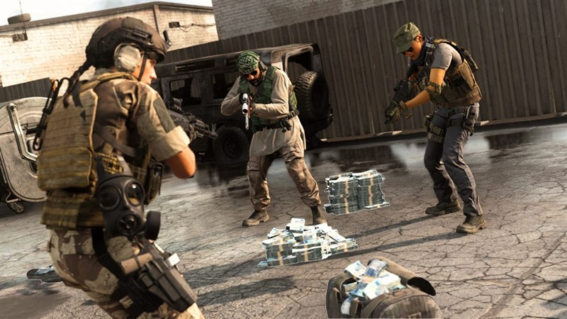Chế độ cướp tiền là địa điểm lý tưởng để những người chưa tiếp xúc với thể loại game nay tập làm quen.
Tại sao nếu chưa bắt nhịp được game thì nên chơi chế độ này? Vì khi bạn bị hạ gục bạn sẽ được hồi sinh sau 15 giây, không cần phải quyết chiến 1v1 hay chờ đồng đội bỏ tiền ra để cứu mình dậy. Vì thế, bạn có thể nhiều thời gian để trải nghiệm game hơn và theo nhịp được game này. Ngoài ra, người chơi có thể mang súng Loadout (súng tùy chỉnh) để sử dụng trong chế độ này. Bạn có thêm nhiều cơ hội để làm quen với bản đồ và nhiều loại súng ống, đây cũng là một trong những chế độ chơi rất tốt nếu bạn có ý định cày level cho những mẫu súng tủ trong Loadout riêng.
4. Chế độ Battle Royale: Trở thành kẻ đi săn hoặc bạn sẽ trở thành kẻ bị săn
Nếu đã từng vác súng chạy bo ở các tựa game PUBG, Fornite hay Apex Legend thì bạn sẽ không cảm thấy lạ lẫm khi bắt đầu chơi Warzone. Tất cả người chơi vẫn được tập trung trên một chiếc máy bay vận chuyển, nơi họp chợ của đủ loại ngôn ngữ trên thế giới cũng như là phương tiện đưa bạn đến nơi cần... nhảy dù. Nếu ở các tựa game kể trên, số lượng người chơi chỉ có 100, Warzone dường như cảm thấy vẫn còn ít, sợ người chơi tìm kiếm nhau mệt nên đã tăng số lượng lên 150 người chơi. Theo nhiều nguồn tin, Warzone sẽ tăng số lượng lên đến 200 người chơi trong 1 ván đấu.
Hình ảnh khu vực quen thuộc các dân bay đang tập chuẩn bị để trung bung...nóc dù.
Khi hạ cánh xuống mặt đất, bạn sẽ được cấp ngay một khẩu súng lục phòng thân. Trang bị này sẽ giúp cho người chơi có thể tồn tại lâu hơn một chút so với việc không chạy vòng vòng bản đồ. Bạn có thể đễ dàng loot thùng đồ vì nó được bố trí đều khắp mọi vị trí trên bản đồ.
Ngoài ra, Warzone đã có sự thay đổi về lối chơi, game sẽ biến bạn thành những thợ săn thực thụ khi cho người chơi thực hiện những nhiệm vụ theo hợp đồng, với nhiều mục tiêu khác nhau như chiếm đóng cứ điểm, tìm kiếm hòm đồ và đặc biệt là săn đầu người. Việc hoàn thành những hợp đồng sẽ đem lại những phần thưởng tiền rất hậu hĩnh. Từ đó bạn có thể mua từ Buystation (trạm mua bán) những trang bị quan trọng để duy trì đến dòng bo cuối, nhất là việc gọi Loadout với những mẫu súng tủ của bạn.
Đây là điều sẽ làm cho game hấp dẫn hơn cũng như đẩy nhanh tốc độ trận đấu hơn, thay vì việc phải núp và nằm chờ thì người chơi sẽ có nhiều động lực để đứng dậy đi săn nhau. Từ đó những pha giao tranh sẽ xuất hiện nhiều, tạo thêm sự sôi động cho ván đấu. Để trở thành kẻ đi săn trong game, bạn cần di chuyển liên tục một cách thông minh. Đây chính là sự khác biệt rõ ràng nhất giữa Warzone và PUBG. Nhịp độ game trên Warzone cực nhanh, nhanh đến chóng mặt nhưng đầy thu hút.
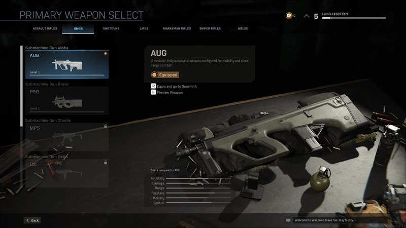AUG đang là khẩu súng được nhiều người chơi yêu thương nhất trong Warzone.
Nói thêm về hệ thống Loadout, đây là nơi mà thiết lập những combo súng và phụ kiện mà bạn muốn đem vào chiến trường. Hệ thống này sẽ giúp bạn đỡ mắc công đi lục lọi từng ngóc ngách, chỉ để kiếm một cây súng phòng thân. Thay vào đó, người chơi phải làm nhiệm vụ, cày cuốc để kiếm được 6000$ và chạy ngay đến Buystation để tậu bộ Loadout đã chuẩn bị sẵn đem vào tham chiến.
Để tận dụng tốt hệ thống này, bạn có thể tìm hiểu những bộ Loadout chất lượng, phù hợp với từng lối chơi ở trên những group cộng đồng. Ngoài ra, sức mạnh của những bộ Loadout sẽ phụ thuộc nhiều vào sự đầu tư của bạn vào những khẩu súng trong kho. Việc chi tiền nâng cấp súng, sẽ góp phần làm tăng sức mạnh cho những món vũ khí mà bạn thiết lập cho Loadout.
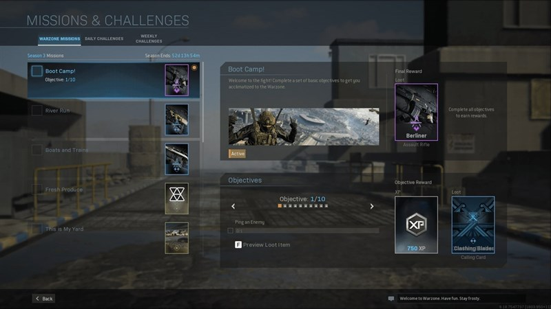Ngoài ra, game thủ còn có những nhiệm vụ riêng để cày thêm điểm kinh nghiệm. Nguồn: GoosuNood
Kho súng của Warzone vẫn có đầy đủ các thể loại, từ súng trường cho đến shotgun đều được lấy từ seri Call Of Duty nên đối với những ai là fan của dòng game thì sẽ không cảm thấy lạ lẫm. Nhưng nếu là newbie thì mất cũng kha khá thời gian để bổ sung kiến thức về súng của game.
Số lượng vũ khí sẽ được rải ngẫu nhiên trên khắp bản đồ, nên Warzone không có nhiều tụ điểm nóng như PUBG, điều này sẽ làm giảm áp lực ở đầu game cho người chơi. Bạn sẽ không phải chịu cảnh 6-7 người cùng đáp vào một cái nhà, để rồi bay màu ngay từ giây phút đầu tiên.
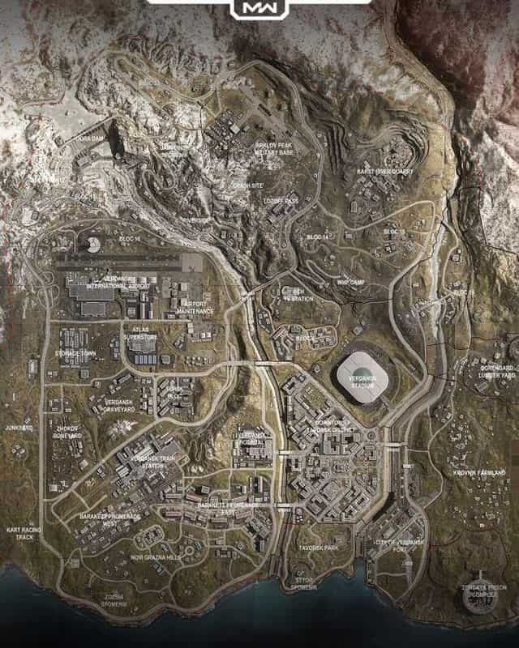Sự phân bố dân cư đồng điều về mặt địa lý sẽ giải tỏa nhiều áp lực cho người chơi giai đoạn đầu game.
Sở hữu được những trang bị ngon là một chuyện, nhưng để có thể trở thành người sống sót cuối cùng, bạn cần phải có một chiến thuật di chuyển rõ ràng, một cái đầu lạnh để không bị cuốn vào những giao tranh không cần thiết nếu như không muốn bị mất lợi thế. Việc chiếm giữ những vị trí tốt ở vòng bo cuối là rất quan trọng, nó sẽ giúp cho bạn dễ thở hơn ở giai đoạn cuối trận đấu, khi mà hàng chục người chơi phải dồn về một diện tích chiến đấu đã được thu hẹp bé xíu.
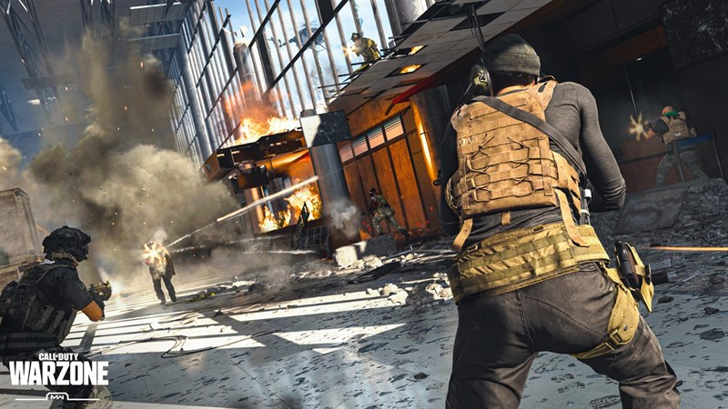Kiếm người bắn nhau cho đỡ chán là thú vui tao nhã của những người chơi Battle Royale.
Nhịp độ của Warzone rất nhanh, người chơi có thể cảm nhận được từ tốc độ di chuyển của nhân vật cho đến việc điều khiển xe. Đây là điều sẽ khiến cho nhiều người chơi ở các tựa game khác cảm thấy bị ngộp trong lần đầu chơi, đặc biệt là tựa game PUBG. Ở Warzone, phần thưởng từ việc hạ gục đối phương thường đem lại rất nhiều lợi tức cho người chơi. Vì vậy, chiến thuật nằm im chờ thời không phải là lựa chọn lý tưởng trong game.
Như đã nói ở trên, bạn cần 6000$ mới có thể sử dụng bộ Loadout đã thiết lập trước đó. Mà để có tiền, thì bạn phải đi săn những người chơi khác. Cho nên, nhịp độ của game thường rất nhanh, người chơi sẽ phải tích cực đi làm nhiệm vụ nhiều hơn để có thể tìm kiếm thêm nhiều lợi tức cho mình.
5. Chết chưa phải là hết
Nếu như bạn từng phải trải qua sự ức chế khi bắn Squad 4 người hoặc 3 người, khi bạn vừa hạ cánh thì bạn đã phải bay màu, để rồi phải ngồi xem trong mòn mỏi hoặc cầu nguyện cho team bạn chết nhanh để còn chơi lại ván mới. Dường như thấu cảm được cảm giác này, Warzone đã cho người chơi thêm cơ hội thứ 2 để sửa sai.
Khi bạn chết ở Warzone, bạn sẽ được đem tới một căn ngục tù. Tại đây bạn phải chiến đấu với 1v1 giành lấy sự sống với những vũ khí được chọn ngẫu nhiên, nếu bạn thắng thì sẽ được hồi sinh để tiếp tục chinh chiến với đồng đội trên chiến trường, còn ngược lại thì... bạn sẽ phải sử dụng tới sức mạnh của đồng tiền.
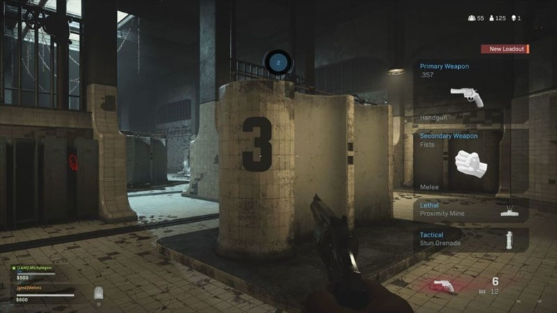Khu vực tụ họp của hội người chết chiến đấu để dành lấy sự sống.
Sau khi thua ở trận chiến trong ngục tù, người chơi sẽ bị chết lâm sàng và tính mạng của bạn phụ thuộc vào việc đồng đội tốt bụng có chịu bỏ ra 4500$ để hồi sinh bạn hay không. Tại các Buy Station bạn có thể hồi sinh (squad buyback) đồng đội với số lần không hạn chế miễn bạn đủ kinh tế, việc đồng đội có sẵn sàng bỏ tiền ra để cho bạn tiếp tục quay trở lại ván game hay không còn phụ thuộc vào cái miệng lươn lẹo và sự kiên nhẫn chờ đợi của bạn.
Với việc được tự do hồi sinh, người chơi sẽ không còn cảm giác bị nhát tay, hay núp chờ địch chết bớt mà sẽ thoải mái đi săn. Không những vậy, Warzone còn thay đổi cách hồi máu sau khi được đồng đội cứu. Thay vì phải sử dụng những loại Kit như những tựa game Battle Royale khác, người chơi Warzone sẽ được tự động hồi máu luôn, chỉ cần không chịu sát thương trong thời gian ngắn, bạn sẽ được hồi đầy máu như chưa hề bị bắn.
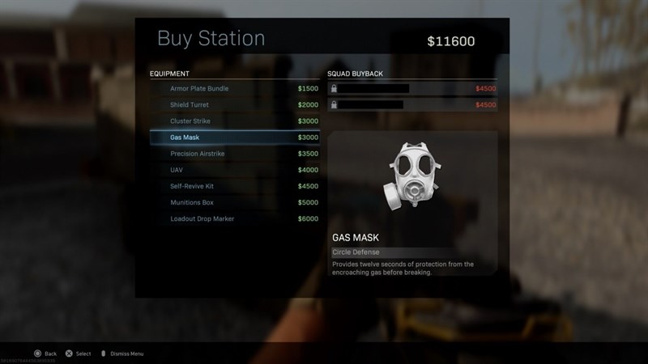Buystation là nơi bán tất tần tật mọi thứ mà người chơi cần, kể cả hồi sinh đồng đội.
6. Không thể không nhắc tới đặc sản của game FPS... Hack
Nạn hack chính là bài toán không có lời giải của dòng game FPS, hầu như tất cả những game thủ FPS phải kêu trời vì hacker xuất hiện còn nhiều hơn cả số trận thắng của họ. Các hình thức khóa tài khoản, nâng cấp hệ thống vẫn không thể dẹp được hết những hacker.
Dù ra chỉ mới ra mắt cách đây không lâu, nhưng Warzone đã nhanh chóng xuất hiện tình trạng hack. Thậm chí, tần suất gặp hacker còn rất cao, bắn 10 trận thì 9 trận gặp hack, trận còn lại do chết sớm nên không kịp gặp. Hai loại hack phổ biến hiện nay trong Warzone gồm Aim bot ( khóa mục tiêu giúp cho bắn đâu trúng đó) và Wallhack (cho phép người chơi nhìn xuyên tường). Theo như Activision cho biết họ đã phải cấm vĩnh viễn hơn 50.000 tài khoản chỉ trong vòng 3 tuần sau khi tựa game ra mắt.
Hack game chính là căn bệnh đã giết chết rất nhiều tựa game FPS, nhìn qua PUBG, tựa game đã làm cho làm cho Battle Royale trở nên phát triển như bây giờ, đang bị vấn nạn hack game đẩy tới bờ vực trở thành death game. Nếu lượn một vòng ở các group cộng đồng Warzone, những bài viết ức chế vì gặp phải hack xuất hiện rất nhiều. Nếu Activision không tìm được hướng giải quyết tình trạng này sớm nhất, thì việc người chơi quay lưng với Warzone là điều có thể xảy ra trong tương lai.
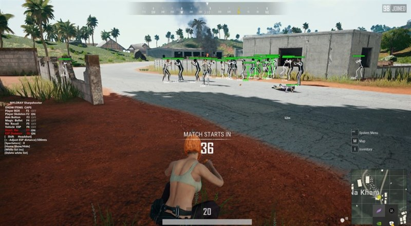Từng là tựa game đứng đầu về lượng người chơi, nhưng nạn hack tràn lan đã khiến PUBG đang chết dần.
7. Đánh giá về Call Of Duty: Warzone
Ưu điểm:
- Đồ họa đẹp, sinh động đem lại cảm giác chân thực cho người.
- Lối chơi mới mẻ, các ván đấu không bị nhàm chán nhờ vào hệ thống nhiệm vụ, vũ khí và phương tiện di chuyển đa dạng.
- Thời gian tìm kiếm trận nhanh, lượng người chơi đông đảo.
- Dù vẫn chưa có nhà phân phối tại Việt Nam, nhưng những hội nhóm người chơi Warzone trên các diễn đàn hoạt động rất sôi động. Với sự phát triển của các cộng đồng như thế này, sẽ giúp cho các newbie có thể tiếp cận game dễ dàng hơn.
- Và quan trọng là đang cho chơi miễn phí.
Warzone cũng có trang bị thêm trực thăng cho game.
Nhược điểm:
- Bản cập nhật mới nhất lỗi rất nhiều, hiện tượng bị văng ra ngoài khi đang chơi, giật lag chuyển động không mượt mà hay sụt giảm fps gây ảnh hưởng rất nhiều đến quá trình trải nghiệm game.
- Nạn hack bùng nổ sớm, khiến cho người chơi cảm thấy ức chế khi chơi game.
- Dung lượng lớn, phải hơi đau đầu trong việc kiếm được một chiếc máy có cấu hình phù hợp để chơi Warzone, khi dung lượng đã tải về đã nặng lên tới 80 GB, đã vậy bản cập nhật mới nhất cũng lên tới 12 GB.
- Nếu bị mất kết nối, bạn sẽ hoàn toàn bị loại khỏi ván đấu chứ không có cơ hội được quay trở lại. Với việc đường truyền không ổn định và sever thường xảy ra lỗi thì đây là một điểm trừ không hề nhỏ ảnh hưởng đến trải nghiệm game.
Dù vẫn còn điểm trừ nhưng Warzone đang gây ấn tượng mạnh mẽ với cộng đồng game thủ bởi... vì đang được cho miễn phí.
8. Tổng kết và gợi ý
Call Of Duty: Warzone là một làn gió mới của thể loại Battle Royale, lối chơi mới mẻ cùng với sự chăm chút về mặt đồ họa. Đây có thể là món khai vị ngon miệng mà Activision đem đến cho người chơi trước khi cho ra mắt Call Of Duty: Modern Warfare 2 trong thời gian gần sắp tới.
Dù vậy, tính riêng với Warzone từ những phản hồi tích cực của game thủ, tựa game này đã có màn ra mắt thành công. Vấn đề quan trọng nhất hiện tại là Activision cần có những hành động mạnh mẽ hơn để ngăn chặn triệt để nạn hack đang có phần lộng hành, khiến người chơi phải kêu trời và tức điên người. Ngoài ra, hy vọng trong tương lai, Warzone sẽ được tách riêng ra để phát triển một cách riêng biệt mà không bị phụ thuộc vào Modern Warface như ở thời điểm hiện tại.
Lời gợi ý đắt-như-vàng cho những bạn đã kiên nhẫn đọc đến cuối bài: Hãy thường xuyên lưu ý đến giáp của bạn thay vì cây máu, thậm chí với full 3 miếng giáp bạn có thể chống chịu với 1 pha súng nhắm headshot vào đầu mà không bị hạ gục ngay tức khắc. Chúc bạn có một trải nghiệp tuyệt vời với Warzone. Hãy để lại bình luận của bạn ngay bên dưới nhé.